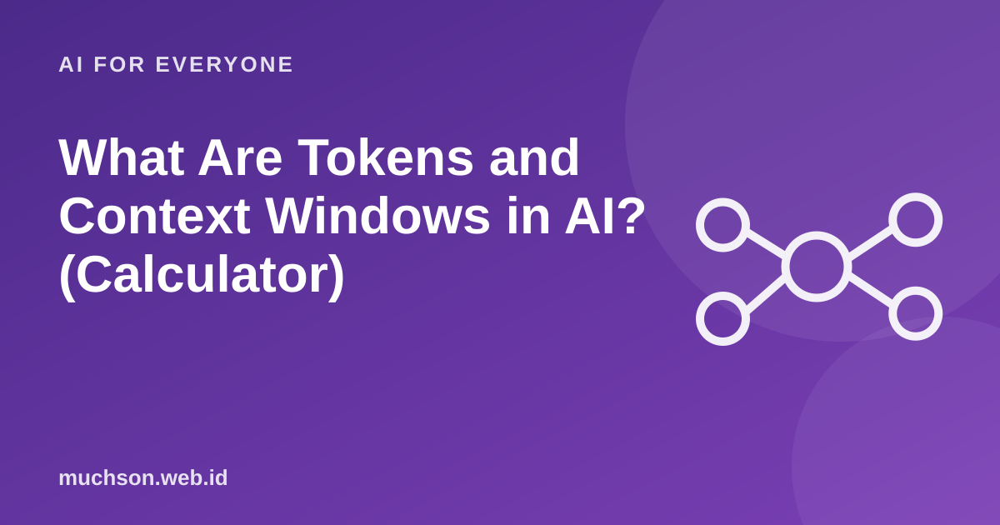

What Are Tokens and Context Windows in AI? (Calculator)
You may have seen the terms "token limit" or "context window" when using an AI assistant. Both decide how long a conversation or document can be processed, and they often affect the cost of using it through an API.
By Muhammad Muchson Attoyibi··1 min read

Tokens: the pieces of text a model counts
A language model does not read letter by letter or word by word, but in pieces called tokens. A token can be a short word, part of a word or a punctuation mark. Common English words often become a single token, while long or rare words can be split into several. For many other languages, the number of tokens per word is usually higher.
Figure 1. The real split depends on each model's tokenizer, so this example is only an illustration.Text description of the diagram
Sentence: "I am learning programming"
Split: I | am | learn | ing | program | ming
Numbered: each piece becomes a number
Processed: the model works with numbers
Context window: how much can be "remembered"
The context window is the limit on how many tokens the model can see at one time: your instructions, the conversation history, pasted documents and the answer it is writing. If a conversation goes over the limit, the early part may be cut or summarised, so the model "forgets" what was said at the start.
Practical tips
FAQ
Is a bigger context window always better?
Not always. A very long context can make the model less focused on particular details and costs more. Send only what is relevant.
What is the difference between input and output tokens?
Input is the text you send, output is the text it generates. Many services price the two differently.
How do I count tokens exactly?
Use the token counter from the provider of the model you use. The estimate in this article is only rough.
Share:
Muhammad Muchson AttoyibiSoftware engineer and academic trainer based in Malang, Indonesia. Writes about technology, learning, and practical everyday topics. About me